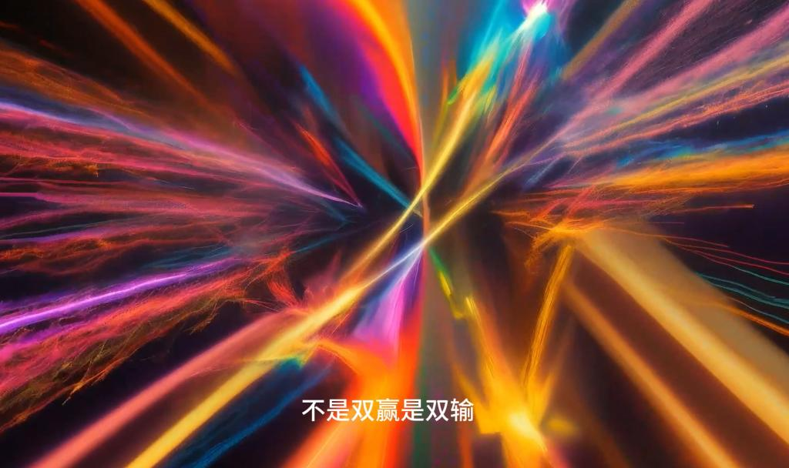
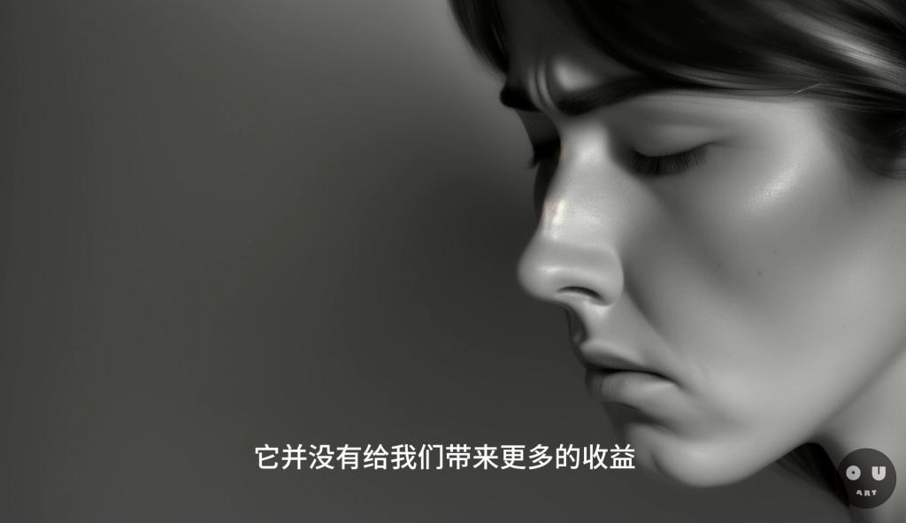
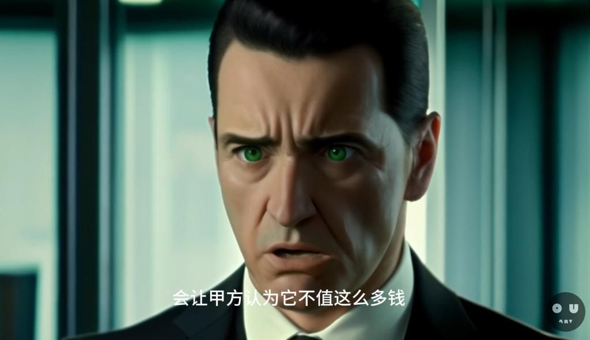
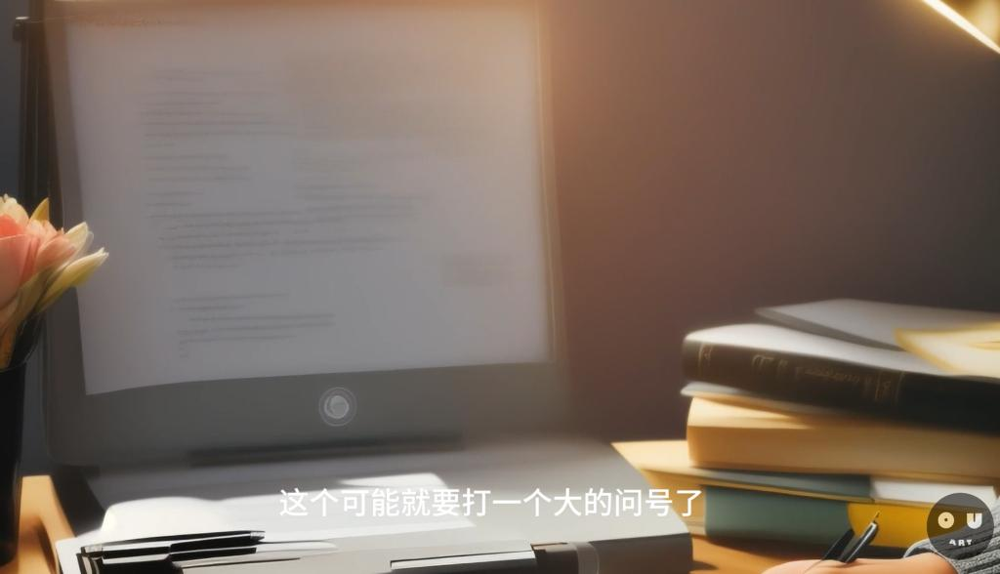

公开课
面对AI时代的艺术与教育：挑战与机遇并存
在这个由AI技术快速发展的时代，我们面临着一个不容忽视的事实：AI的广泛应用正在对传统行业造成前所未有的冲击，特别是在艺术和创作领域。随着AI技术在艺术创作中的应用越来越成熟，我们不得不重新考虑未来艺术就业的走向以及教育体系的适应性。

AI技术对艺术行业的影响
虽然AI为我们带来了许多辅助工具，使创作过程更加高效，但同时也带来了一些不容忽视的问题。其中最为突出的是AI技术可能导致某些艺术职业的价值缩减甚至消失。例如，AI可以生成与专业插画师几乎无异的作品，这不仅对插画师的工作造成了冲击，也在一定程度上冲淡了专业艺术创作的价值。

AI技术与艺术教育的结合
面对AI技术的快速发展，艺术教育需要进行相应的调整，以帮助学生们适应未来就业市场的变化。首先，艺术教育应更加注重创造力的培养，而非单一地强调技术技能的训练。其次，艺术教育体系内应加入AI技术的学习和应用，让学生们了解并掌握如何利用AI辅助艺术创作。

重新思考未来艺术就业的方向
随着AI技术在艺术领域的应用日益广泛，未来的艺术就业方向也将发生变化。艺术家和艺术学生需要重新考虑自己的定位，探索AI与传统艺术技能结合后的新可能性。同时，我们也应认识到，虽然AI技术可以带来便利，但真正的艺术创作仍然需要人类的情感、思考和独特的创造力。

结论
我们正处于一个关键时期，AI技术的快速发展对传统艺术行业和艺术教育带来了挑战和机遇。我们需要合理利用AI技术，探索AI与传统艺术的有效结合，以创造出新的艺术形式和就业机会。同时，艺术教育体系也应随之变革，更加注重培养学生的创造力和适应新技术的能力。
视频地址：娱乐的AI时代，一个没有赢家的时代|ChatGPT|Sora|Suno|测试和娱乐|板绘|_哔哩哔哩_bilibili